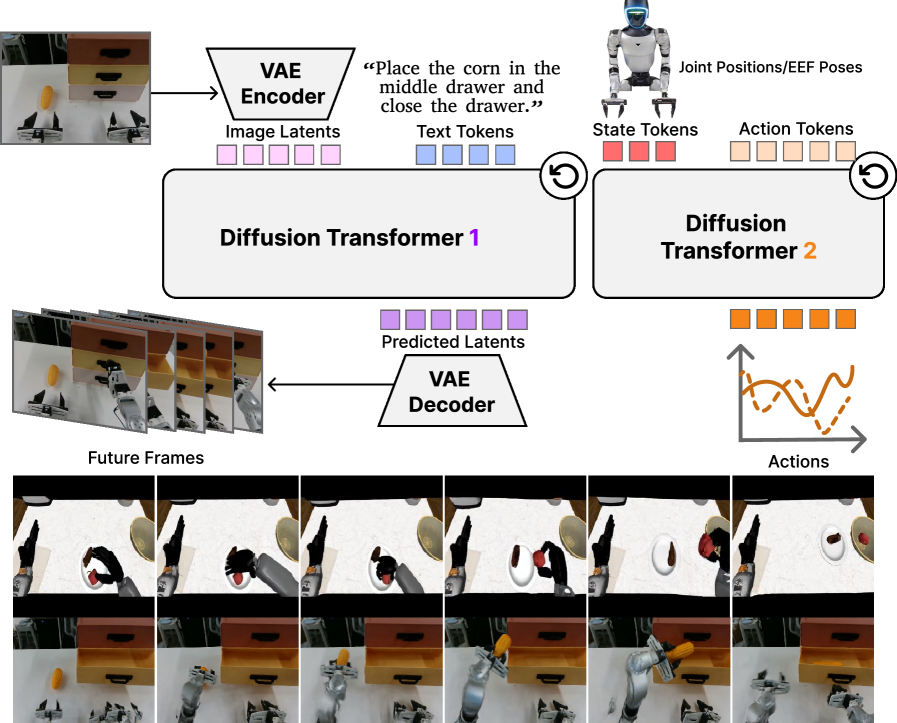
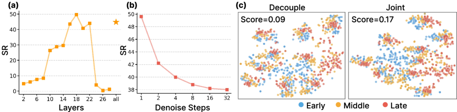
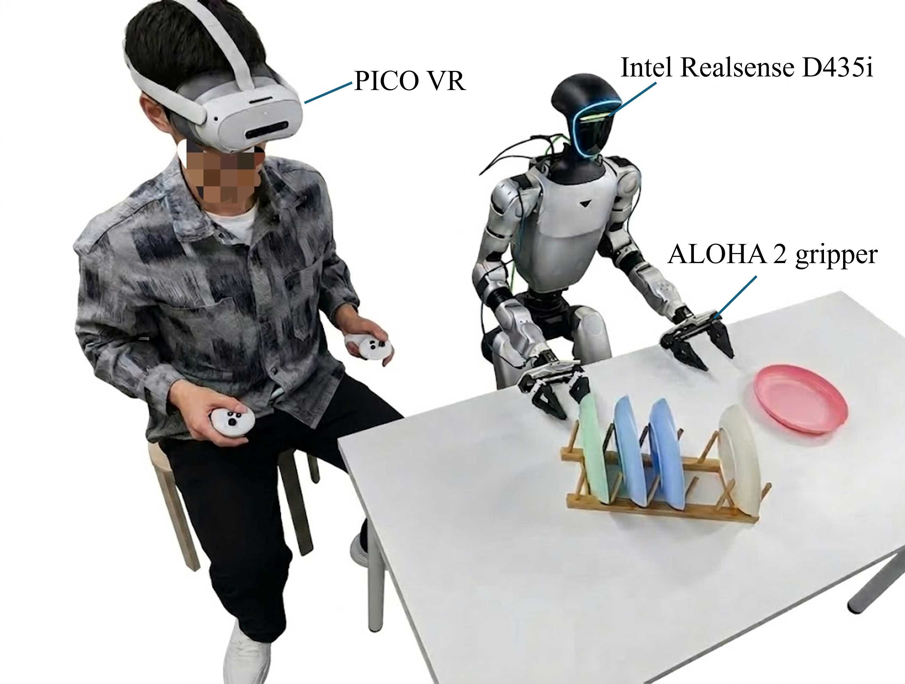

DiT4DiT: Jointly Modeling Video Dynamics and Actions for Generalizable Robot Control
1. Quick overview of the paper
Difficulty rating: ★★★★☆. To understand the main thread, you need to be familiar with VLA, Diffusion Transformer, flow matching, robot imitation learning and sim-to-real evaluation; the difficulties mainly lie in the tri-timestep training design and "how to generate video features into action conditions".
Keywords: Video-Action Model, Diffusion Transformer, flow matching, VLA, robot control, generative world modeling.
| Reading positioning | content |
|---|---|
| What should the paper solve? | Existing VLA mostly inherits static image-text pre-training representations, and physical dynamics and temporal state transfer mainly rely on limited action data learning; the author wants to test and realize "whether video generation can be used as a stronger proxy objective for robot strategy learning." |
| The author's approach | Initialize Video DiT with Cosmos-Predict2.5-2B, extract intermediate hidden features from fixed flow timestep and specified transformer layer; then let Action DiT use these features through cross-attention, and use dual flow-matching to jointly train video and action. |
| most important results | DiT4DiT averages 98.6% on LIBERO and 50.8% on RoboCasa-GR1; the relative parameter matching Qwen3DiT improves by 14.6 percentage points on RoboCasa-GR1 and demonstrates 7 tasks and zero-sample out-of-distribution generalization on the real Unitree G1. |
| Things to note when reading | The method is not to generate complete future frames first and then do inverse dynamics, but to extract intermediate features in the video denoising process; the data conditions of "from scratch" and "pretrained baseline" in the experiment need to be looked at separately. The real robot part also introduced 241, 450 GR1 pre-training episodes. |
Core contribution list
- Propose the dual-DiT architecture of Video-Action Model.The video DiT is responsible for future visual dynamic modeling, and the action DiT is responsible for continuously controlling trajectory generation. The two are coupled through intermediate denoising features.
- Dual flow-matching and tri-timestep designs are proposed.The video training timestep, action training timestep, and feature extraction timestep are split so that generative modeling, action denoising, and stable feature reading each have appropriate noise scales.
- System verification video generation proxy.The author first compares Grounding, FLARE-style latent modeling and Video generation, reporting that video generation has the highest data efficiency and fastest convergence on RoboCasa-GR1.
- Evaluated on simulated and real G1 robots.Covers LIBERO, RoboCasa-GR1, real Unitree G1, zero-sample object/category/number variation, and ablation such as layer, denoising step, joint vs. decoupled training, etc.
2. Motivation and related work
2.1 Problems to be solved
The starting point of the paper is a very specific contradiction: VLA models can already connect vision, language and action, but their backbone mostly comes from static image-text pre-training. Such a representation is good at "what objects to recognize and what language to understand", but it is not forced to learn "how the object will move next, and how the state changes after the hand and the object come into contact" in the pre-training stage. As a result, low-level physical interactions and sequential temporal transitions are deferred to downstream robot data, and robot action-labeled data is expensive and limited.
An alternative perspective proposed by the authors is that video generative models inherently learn temporal consistency, motion priors, causal structure, and implicit physical dynamics when predicting future frames. Rather than treating it as an external auxiliary model, it is better to make it one of the backbones of strategy learning.
2.2 Where are the existing methods stuck?
Related Work split the previous game into two strands. The first is VLA: RT-2, OpenVLA, UniVLA, CogVLA, GR00T and $\pi$ series migrate the semantic capabilities of VLM to control, but the common weakness is that the training target of the underlying backbone mainly comes from static image and text pairs. The second one is video generation in robotics: In the early days, video prediction was mostly used for visual foresight or model-based planning; in recent years, work has begun to put video latents and actions into a shared space, or use pre-trained video backbone with action decoder.
The closest thing to this article is mimic-video: it also connects a pre-trained video backbone with a flow-matching action decoder, and conditions the action with a partially denoised video latent. But the key difference with DiT4DiT is joint training: Instead of using the video model in a fixed or staged manner, video generation and action generation are jointly adapted under the same goal, so that the action module learns to extract effective features at different video generation stages.
2.3 High-level solution ideas
The high-level idea of DiT4DiT can be summarized as "predicting video dynamics - inverse dynamics". First let Video DiT model future visual dynamics under current observation and language target conditions; but what is actually used for control is not the final reconstructed future frame, but the intermediate hidden states extracted at a fixed flow timestep $\tau_f$. Action DiT then restores the action sequence through flow matching based on these temporally grounded features, robot proprioceptive state and noisy action trajectory.
3. Video generation as proxy scaling
Before the formal method, the paper first conducted a verification experiment: comparing the effects of three proxy tasks on downstream robot policy learning.
| Proxy task | training signal | Limitations or strengths of concern to the author |
|---|---|---|
| Grounding | Learn from GR00T to train the VLM's auxiliary detection head to learn what the object is and where it is. | Partial to semantics and target positioning, it cannot directly learn continuous physical dynamics. |
| FLARE-style latent modeling | Use learnable queries to focus on VLM features and align future observation latent embeddings; here the query diffusion process of FLARE is removed for approximate control. | There is future representation supervision, but still latent around VLM, the authors believe that it is difficult to capture continuous pixel-level physical dynamics. |
| Video generation | Predicting future visual dynamics with video backbones like Cosmos-Predict2.5-2B. | Directly using future videos as unsupervised signals forces the model to learn spatiotemporal dynamics and physical transitions. |
The experiment uses Qwen3-2B as the VLM backbone and Cosmos-Predict2.5-2B as the Video backbone, and controls the scale of trainable parameters. Evaluations were performed on 24 GR1 tabletop manipulation tasks in RoboCasa. In order to make the role of proxy task clearer, the author decouples proxy pre-training from downstream action expert training: VLM/Video backbone first performs self-supervised training on the target data, and then freezes it in the action expert fine-tuning stage.

4. Detailed explanation of method

4.1 Flow matching prerequisites
The author uses flow matching to unify video generation and action generation. It connects the clean data $x_0$ and the Gaussian noise $z$ with a linear probability path:
This formula constructs the training sample: add a certain noise level $\tau$ to the clean data, and obtain the intermediate state $x_\tau$.
$$x_{\tau} = (1-\tau)x_0 + \tau z, \quad \tau \in [0, 1]$$| $x_0$ | Clean samples from a data distribution, either latent future videos or real action sequences. |
| $z$ | Standard Gaussian noise, $z \sim \mathcal{N}(0, I)$. |
| $\tau$ | flow timestep; $\tau=0$ is clean data, and $\tau=1$ is pure noise. |
Since the path is linear, the target speed is the derivative of $\tau$:
What the model learns is not to directly output clean samples, but to predict "which direction to flow" at each noise location.
$$v^*(x_\tau, \tau)=\frac{dx_\tau}{d\tau}=z-x_0$$ $$\mathcal{L}_{FM}=\mathbb{E}_{x_0, z, \tau}\left[\left\|v_\theta(x_\tau, \tau)-(z-x_0)\right\|^2\right]$$When reasoning, start from the noise and use Euler discretization to integrate along the predicted velocity field toward $\tau=0$:
$$x_{\tau-\Delta\tau}=x_\tau-\Delta\tau\cdot v_\theta(x_\tau, \tau)$$4.2 Formalization of the problem
Common VLA direct modeling $\pi_\theta(\mathbf{a}_t\mid \mathbf{o}_t, l)$. DiT4DiT is rewritten as a paradigm of "predicting future visual dynamics first, and then deducing actions from the visual dynamics":
Instead of just looking at the current frame, the action looks at the current frame and the video model's intermediate generated representation of the future state.
$$\mathbf{o}_{t+1}\sim p_v(\cdot\mid \mathbf{o}_t, l)$$ $$\mathbf{a}_t\sim p_a(\cdot\mid \mathbf{o}_t, \mathcal{H}(\mathbf{o}_{t+1}^{\tau_v})), $$ $$\mathbf{o}_{t+1}^{\tau_v}\xrightarrow{\tau_v\to 0}\mathbf{o}_{t+1}$$| $p_v$ | Video generation distribution. |
| $p_a$ | Action generation distribution. |
| $\mathcal{H}$ | Operator for hooking hidden states from Video DiT forward pass. |
The training objective is equivalent to modeling the joint distribution of videos and actions:
4.3 Dual-DiT architecture
Video DiT. The author initialized the video backbone with Cosmos-Predict2.5-2B. Its causal video VAE encodes the current observation $\mathbf{o}_t$ and the future frame $\mathbf{o}_{t+1}$ as latent $\mathbf{z}_t^0, \mathbf{z}_{t+1}^0$; DiT uses flow-prediction parameterization and is conditionalized by multi-layer language embedding of Cosmos-Reason1. The key is that DiT4DiT does not treat fully generated frames as action input, but extracts intermediate activations at specified flow timesteps and transformer blocks:
This formula is saying: treat the video generation network as a "physical dynamic feature extractor" and hook its internal representation during denoising of future frames.
$$\mathbf{h}_t^{\tau_f}=\mathcal{H}[v_\theta^{video}](\mathbf{z}_{t+1}^{\tau_f}, \tau_f\mid \mathbf{z}_t^0, l), \quad \mathbf{z}_{t+1}^{\tau_f}\xrightarrow{\tau_f\to 0}\mathbf{z}_{t+1}^0$$| $\mathbf{h}_t^{\tau_f}$ | Temporally grounded hidden features for use by Action DiT. |
| $\tau_f$ | Fixed feature extraction timestep; choosing which noise stage will affect the action success rate. |
| $v_\theta^{video}$ | Velocity field prediction network for video DiT. |
Action DiT. The action module is modified from the action diffusion transformer of GR00T-N1. It uses the AdaLN injection action diffusion timestep and reads $\mathbf{h}_t^{\tau_f}$ with cross-attention. The input sequence is concatenated by proprioceptive state embeddings, noisy action trajectories and learnable future tokens; the output is the velocity field of the action sequence.
4.4 Tri-timestep and joint training

| Timestep | Sampling method | Function |
|---|---|---|
| $\tau_v$ | $\tau_v\sim\mathcal{U}[0, 1]$ | Train the video module so that it covers the complete denoised trajectory. |
| $\tau_f$ | Fixed deterministic timestep; the algorithm box is implemented as selecting from discrete buckets. | Extract stable visual conditions to prevent the action module from receiving drifting representations during training and inference. |
| $\tau_a$ | $\tau_a=1-\sigma, \ \sigma\sim\mathrm{Beta}(\alpha, \beta)$ | Training movement modules put more capacity into key control phases. |
The total loss consists of two items: action flow matching is the main task, and video flow matching uses the coefficient $\lambda$ to maintain the video dynamic modeling capability.
$$\mathcal{L}^{total}_t = \mathbb{E}_{\tau_a, \epsilon}\left[\left\|v_\phi^{action}(\mathbf{a}_t^{\tau_a}, \tau_a\mid \mathbf{h}_t^{\tau_f}, s)-(\epsilon-\mathbf{a}_t^0)\right\|^2\right] +\lambda \mathbb{E}_{\tau_v, z}\left[\left\|v_\theta^{video}(\mathbf{z}_{t+1}^{\tau_v}, \tau_v\mid \mathbf{z}_t^0, l)-(z-\mathbf{z}_{t+1}^0)\right\|^2\right]$$| $s$ | Robot proprioceptive state. |
| $\mathbf{a}_t^0$ | Real action tracks. |
| $\epsilon$ | Action noise. |
| $\lambda$ | The weight of the video loss. |
4.5 Training and inference process
encode current and future observations with frozen VAE
sample video timestep tau_v and noise z
construct noisy future latent z_{t+1}^{tau_v}; predict video velocity
sample or choose feature timestep tau_f; hook hidden states h_t^{tau_f}
sample action timestep tau_a from Beta schedule and action noise epsilon
construct noisy action a_t^{tau_a}; predict action velocity with h_t^{tau_f} and state s
optimize L_action + lambda * L_video, with action mask M when computing action loss
optionally generate future video by Euler sampling through Video DiT
for action prediction, draw one future noise latent and run a single deterministic feature extraction at tau_f
initialize action from Gaussian noise
Euler integrate Action DiT for N_a steps to produce final action trajectory
The most easily misunderstood point here is that real control does not require the complete video generation first. The paper emphasizes that the action condition only requires a single hidden feature extraction with a fixed timestep; this is also one of the reasons why "one-step denoising is best" in the subsequent ablation.
5. Experiments, results and replication settings
5.1 Experimental setup
| Evaluation scenario | Robot/Action Space | Data and Reviews |
|---|---|---|
| LIBERO | Franka Emika Panda, 7-DoF | There are four suites of Spatial/Object/Goal/Long; each type of standard data contains 500 demonstrations and 10 tasks. |
| RoboCasa-GR1 tabletop | Fourier GR1 humanoid: dual 7-DoF arms, dual 6-DoF dexterous hands, 3-DoF waist, 29-dimensional action space | 24 household manipulation tasks; 1, 000 human-collected trajectories per task; 50 rollouts per task, maximum 720 environment steps. |
| Real-world G1 | Unitree G1 humanoid, dual 7-DoF arms + ALOHA2 grippers, continuous 16-DoF action space; only ego-view camera | 7 real tasks, 200 teleop demonstrations per task; 20 real rollouts per task. |
In the simulation experiment, DiT4DiT and parameter matching baseline Qwen3DiT were trained from scratch; external baselines used official open source pre-trained weights. In the real experiment, DiT4DiT was first pre-trained on 241, 450 simulated GR1 episodes, and then fine-tune with real G1 teleop data; Qwen3DiT followed the same pipeline; GR00T-N1.5 was initialized from the official pre-training weights. The authors emphasize that the amount of pre-training data for DiT4DiT is approximately 15% of the data size used by GR00T-N1.5.
5.2 Appendix Integration: Model and Training Configuration
| module | Key configuration |
|---|---|
| Video DiT | Base VGM: Cosmos-Predict2.5-2B; attention: flash_attention_2; hidden feature dim 2048; extract layer 18. |
| Action DiT | DiT-B; hidden size 2560; max sequence length 1024; action dim 32; state dim 64; future action window 15; action horizon 16; cross attention dim 2048; dropout 0.2; AdaLN; 16 layers; num inference timesteps 4. |
| Training | per-device batch size 8; 32 GPUs; max train steps 100, 000; warmup steps 5, 000; VGM LR $1\times10^{-5}$; Action LR $1\times10^{-4}$; cosine_with_min_lr; min LR $5\times10^{-7}$; gradient clipping 1.0; AdamW, $(\beta_1, \beta_2)=(0.9, 0.95)$; weight decay $1\times10^{-8}$. |
Appendix A.1 These configurations are critical to reproducibility, especially the two learning rates of extract layer 18, action inference timesteps 4, and Video/Action are 10 times different.
| Dataset | Episode count | Embodiment | DoF |
|---|---|---|---|
| Fourier_GR1_Unified_1K | 24, 000 | GR1 humanoid | 29 |
| Fourier_GR1_Pretrain_10K | 241, 450 | GR1 humanoid | 29 |
| LIBERO | 1, 693 | Franka Emika Panda | 7 |
| Real Robot | 1, 400 | G1 humanoid | 16 |
Appendix A.2 Data set configuration description: The simulation benchmark is trained directly with the target data; before the real robot, Fourier_GR1_Pretrain_10K is used for sim pre-training, and then 1, 400 real teleop episodes are used for fine-tune.
5.3 LIBERO Main results
| Method | Spatial | Object | Goal | Long | Average |
|---|---|---|---|---|---|
| Diffusion Policy | 78.3 | 92.5 | 68.3 | 50.5 | 72.4 |
| Dita | 97.4 | 94.8 | 93.2 | 83.6 | 92.3 |
| $\pi_0$ | 96.8 | 98.8 | 95.8 | 85.2 | 94.2 |
| UniVLA | 96.5 | 96.8 | 95.6 | 92.0 | 95.2 |
| $\pi_{0.5}$ | 98.8 | 98.2 | 98.0 | 92.4 | 96.9 |
| OpenVLA-OFT | 97.6 | 98.4 | 97.9 | 94.5 | 97.1 |
| CogVLA | 98.6 | 98.8 | 96.6 | 95.4 | 97.4 |
| GR00T-N1.5 | 96.2 | 94.0 | 96.0 | 90.0 | 94.1 |
| Qwen3DiT (from scratch) | 98.0 | 98.8 | 96.0 | 93.6 | 96.6 |
| DiT4DiT (from scratch) | 98.4 | 99.6 | 98.6 | 97.6 | 98.6 |
The author emphasizes two points: first, DiT4DiT takes the highest value in the three suites of Object, Goal, and Long; second, 97.6% of the Long suite is used to support the argument that "explicit modeling of spatiotemporal dynamics is helpful for multi-stage long-sequence execution."
5.4 RoboCasa-GR1 Main results
| Task | GR00T-N1.5 | GR00T-N1.6 | Qwen3DiT | DiT4DiT |
|---|---|---|---|---|
| BottleToCabinetClose | 40.0 | 36.0 | 50.0 | 48.0 |
| CanToDrawerClose | 56.0 | 28.0 | 48.0 | 74.0 |
| CupToDrawerClose | 50.0 | 12.0 | 42.0 | 52.0 |
| MilkToMicrowaveClose | 52.0 | 20.0 | 38.0 | 50.0 |
| PotatoToMicrowaveClose | 22.0 | 28.0 | 18.0 | 36.0 |
| WineToCabinetClose | 44.0 | 18.0 | 28.0 | 42.0 |
| FromCuttingboardToBasket | 46.0 | 42.0 | 42.0 | 52.0 |
| FromCuttingboardToCardboardbox | 44.0 | 40.0 | 30.0 | 48.0 |
| FromCuttingboardToPan | 58.0 | 62.0 | 50.0 | 76.0 |
| FromCuttingboardToPot | 48.0 | 60.0 | 44.0 | 62.0 |
| FromCuttingboardToTieredbasket | 28.0 | 48.0 | 36.0 | 50.0 |
| FromPlacematToBasket | 32.0 | 42.0 | 14.0 | 50.0 |
| FromPlacematToBowl | 52.0 | 34.0 | 28.0 | 56.0 |
| FromPlacematToPlate | 42.0 | 42.0 | 40.0 | 32.0 |
| FromPlacematToTieredshelf | 26.0 | 24.0 | 30.0 | 18.0 |
| FromPlateToBowl | 38.0 | 48.0 | 36.0 | 56.0 |
| FromPlateToCardboardbox | 40.0 | 44.0 | 36.0 | 58.0 |
| FromPlateToPan | 56.0 | 48.0 | 34.0 | 68.0 |
| FromPlateToPlate | 50.0 | 66.0 | 44.0 | 58.0 |
| FromTrayToCardboardbox | 36.0 | 42.0 | 48.0 | 38.0 |
| FromTrayToPlate | 54.0 | 52.0 | 44.0 | 56.0 |
| FromTrayToPot | 36.0 | 64.0 | 34.0 | 54.0 |
| FromTrayToTieredbasket | 34.0 | 42.0 | 36.0 | 46.0 |
| FromTrayToTieredshelf | 22.0 | 38.0 | 18.0 | 38.0 |
| Average | 41.8 | 40.8 | 36.2 | 50.8 |
DiT4DiT achieves the highest success rate in 16 out of 24 tasks, with an average of 50.8%, which is 9.0 percentage points higher than GR00T-N1.5, 10.0 percentage points higher than GR00T-N1.6, and 14.6 percentage points higher than parameter-matched Qwen3DiT. The author specifically names CanToDrawerClose, FromCuttingboardToPan, FromPlateToPan and other tasks that require high spatial coordination and physical interaction.
5.5 Real robots and generalization results


The key comparison in the real experiment part is: Qwen3DiT uses the same sim pre-training + real fine-tuning pipeline, but almost collapses in real tasks, with all tasks not exceeding 10%, and Drawer Interaction, Arrange Flower, and Box Packing being 0%. DiT4DiT can still complete high-precision tasks with only a single ego camera, which the author attributes to the video generation backbone's preservation of future dynamics and fine-grained visual details.


6. Diagram and ablation interpretation
6.1 Feature extraction layer

The author tested the hidden states of different video transformer blocks on 5 tasks of RoboCasa-GR1, including CanToDrawerClose, FromCuttingboardToBasket, FromPlacematToBowl, FromPlateToCardboardbox, and FromTrayToPot. The performance of early layers 2-8 is poor, which the author interprets as more low-level textures; the middle and deep layers gradually become better and reach a peak at layer 18; the final layers 24-28 show a significant decline, and the author believes that the end layer focuses more on video denoising and pixel reconstruction, but loses control-relevant abstraction. Therefore layer 18 is selected by default.Appendix A.1
6.2 Denoising steps
For action conditioning, single-step denoising has the highest performance, and the success rate decreases monotonically when steps increase from 1 to 32. The explanation of the paper is that too many iterations will over-commit hidden states to a specific reconstruction of future pixel details, weakening generalizable action priors. This conclusion also has engineering significance: real control can bypass multi-step video generation and only perform a single forward feature extraction.
6.3 Joint vs. decoupled training
t-SNE visualization shows that although the features of decoupled training form task clusters, the time stages within the cluster are more fragmented; the transition of Early/Middle/Late stages after joint training is clearer, and the silhouette score increases from 0.09 to 0.17, which is about twice as much. The author uses this point to support that "joint training allows the visual backbone to embed the temporal progression of continuous, physical perception."
6.4 System and generation plan diagram


6.5 Deployment efficiency
| Model | Trainable params | Deployment frequency |
|---|---|---|
| GR00T-N1.5 | 2.7B | 13 Hz |
| Qwen3DiT | 2.3B | 9 Hz |
| DiT4DiT | 2.2B | 6 Hz |
DiT4DiT does not rely on a larger trainable parameter count to achieve results; instead it is the smallest of the three at 2.2B. The trade-off is that the control frequency is reduced to 6 Hz. The authors point out that for fixed tasks, LLM features can be pre-fetched and cached because DiT4DiT policy learning does not train LLM components, which can improve effective deployment frequency.
7. Analysis, Limitations and Boundaries
7.1 The most valuable part of this paper
Judging from the paper's own argument, the core value is not "making another VLA baseline", but clearly treating video generation as a scaling proxy for robot strategy learning, and using the three-layer evidence closed-loop support in the same paper: first use proxy task comparison to show that video generation is more efficient than Grounding/FLARE-style; then use dual-DiT + dual flow matching to give an end-to-end implementation; and finally use LIBERO, RoboCasa-GR1, real Unitree G1 and zero-shot generalization to verify this proxy can be converted into control performance.
7.2 Why the results hold up
The paper's results are supported by multiple complementary controls. First, Qwen3DiT is a parameter matching baseline and shares Action DiT, which makes the difference of "static VLM prior vs. video generation prior" clearer. Second, both simulations and real experiments report segmented tasks rather than just averages; the 24-task table of RoboCasa-GR1 shows that DiT4DiT does not only improve the average on a few tasks. Third, ablation covers feature extraction layer, denoising steps and joint vs. decoupled training, and provides evidence for the key designs in the method. Fourth, the appendix provides training configuration, data configuration, and real system hardware to explain the author's resources and data conditions.
7.3 Limitations of the author's statement
Appendix A.4 The authors explicitly acknowledge that real deployments rely on only a single egocentric camera. While this highlights the spatial reasoning capabilities of video representations, single-view setups are susceptible to severe occlusions, especially in complex dual-arm tasks where robot arms or large objects may temporarily block the view, thereby destroying the temporal continuity of visual features. The author proposes that wrist-mounted cameras or tactile feedback can be added in the future and integrated with the Video DiT backbone to maintain more robust state estimation under occlusion.
The second boundary relates to data size. The author points out that the real zero-shot generalization only uses about 15% of the pre-training corpus of GR00T data, but the next step still needs to expand the pre-training data to more embodiments, such as different kinematics, grippers and camera parameters. In other words, the paper shows the trend of data-efficient, but larger-scale cross-embodiment foundation model is still the future direction.
7.4 Applicable boundaries
- Suitable scenarios: Robotic tasks that require continuous control, physical dynamics, temporal state transitions, and long horizon operations, especially when static semantic representations are insufficient to describe contact and motion processes.
- Current constraints: Requires large video DiT, Action DiT and high training resources; the appendix configuration is 32 GPUs, 100k steps, which is not light for ordinary laboratory reproducibility.
- Deployment trade-offs: The 6 Hz control frequency can be used for paper tasks, but it is slower than the 13 Hz of GR00T-N1.5 and the 9 Hz of Qwen3DiT; if the task requires higher frequency closed-loop control, additional optimization of caching, distillation or lightweighting is required.
- Data interpretation: The real task is not completely without pre-training. DiT4DiT uses 241, 450 simulated GR1 episodes and then fine-tune 1, 400 real G1 episodes; when reading the results, it is necessary to distinguish between the simulation from scratch and the real two-stage pipeline.
8. Repeat audit
Code and models
Targetable: The code repository is given on the paper and project pages https: //github.com/Mondo-Robotics/DiT4DiT. arXiv Summary code and models will be published on the project page; the project page clearly provides a Code link.
Model initialization
More clearly: Video DiT is initialized from Cosmos-Predict2.5-2B; language conditions are from Cosmos-Reason1 embeddings; Action DiT is adapted from GR00T-N1. The appendix lists the action model dimensions, number of layers, dropout, number of timesteps and optimizer.
data
Partially relies on external/self-collected data: LIBERO and RoboCasa-GR1 related data can be found according to the public benchmark path; the real G1 data is 1, 400 teleop episodes collected by the author. Reproducing the real results requires similar hardware, VR teleoperation pipeline and data collection process.
Computing power
Higher cost: Appendix training configuration is 32 GPUs, 100, 000 steps, per-device batch size 8. Real deployment inference is run on a single RTX 4090 workstation; the deployment efficiency table also reports 6 Hz on a single A100.
Minimum Replication Experiment Recommendations
If the goal is to verify the core mechanism rather than reproduce the complete SOTA, you can first reproduce the three key settings of layer 18 / one-step feature extraction / joint training on the five ablation tasks of RoboCasa-GR1; they correspond to the main design evidence of the paper.